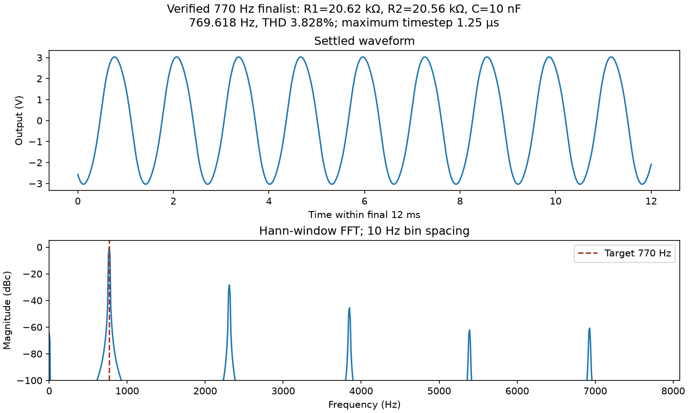
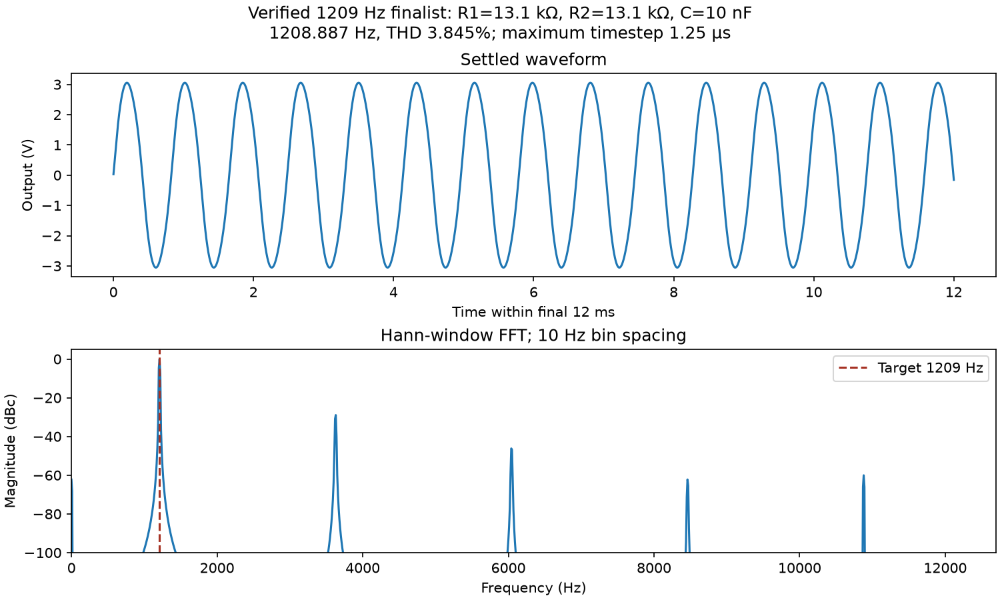

Nine standard nominal C values: 6.8, 7.5, 8.2, 9.1, 10, 11, 12, 13, 15 nF. Independent ±1%, ±5%, ±10% capacitor deviations at each nominal value.
Requested broad capacitor sweep · Separate fine resistor sweep · Interpretation · Instructions
| Target Hz | Search | C nF | R1 Ω | R2 Ω | Simulated Hz | Error % | THD % |
|---|---|---|---|---|---|---|---|
| 770 | previous_10nF | 10 | 20680 | 20680 | 766.2090 | 0.4923 | 3.845 |
| 770 | broad_C | 10 | 20680 | 20680 | 766.2090 | 0.4923 | 3.845 |
| 770 | fine_R | 10 | 20620 | 20560 | 769.5837 | 0.0541 | 3.825 |
| 1209 | previous_10nF | 10 | 13000 | 13150 | 1210.9206 | 0.1589 | 3.913 |
| 1209 | broad_C | 11 | 13000 | 11000 | 1207.1703 | 0.1513 | 1.496 |
| 1209 | fine_R | 10 | 13082 | 13110 | 1209.0978 | 0.0081 | 3.854 |
The finer resistor search improves nominal frequency accuracy. The broad sweep separately shows other nominal capacitors and their distortion/tolerance trade-offs. See both detailed reports before choosing hardware values.
C=10 nF; R1=20620 Ω; R2=20560 Ω; verified frequency 769.6176 Hz.

C=10 nF; R1=13100 Ω; R2=13100 Ω; verified frequency 1208.8873 Hz.
